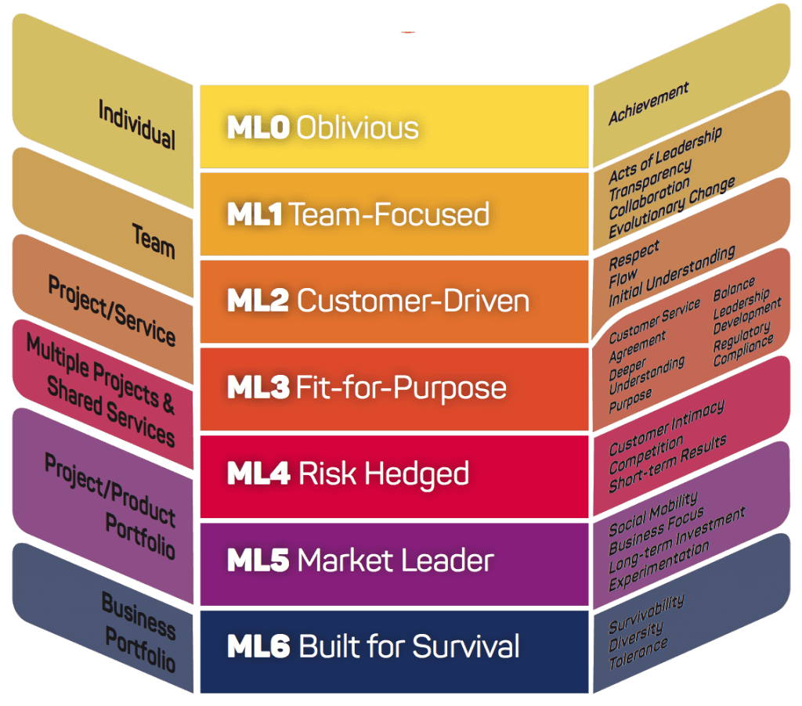

- 00 开篇词 从默默无闻到风靡全球，DevOps究竟有什么魔力？.md.html
- 01 DevOps的“定义”：DevOps究竟要解决什么问题？.md.html
- 02 DevOps的价值：数字化转型时代，DevOps是必选项？.md.html
- 03 DevOps的实施：到底是工具先行还是文化先行？.md.html
- 04 DevOps的衡量：你是否找到了DevOps的实施路线图？.md.html
- 05 价值流分析：关于DevOps转型，我们应该从何处入手？.md.html
- 06 转型之路：企业实施DevOps的常见路径和问题.md.html
- 07 业务敏捷：帮助DevOps快速落地的源动力.md.html
- 08 精益看板（上）：精益驱动的敏捷开发方法.md.html
- 09 精益看板（下）：精益驱动的敏捷开发方法.md.html
- 10 配置管理：最容易被忽视的DevOps工程实践基础.md.html
- 11 分支策略：让研发高效协作的关键要素.md.html
- 12 持续集成：你说的CI和我说的CI是一回事吗？.md.html
- 13 自动化测试：DevOps的阿克琉斯之踵.md.html
- 14 内建质量：丰田和亚马逊给我们的启示.md.html
- 15 技术债务：那些不可忽视的潜在问题.md.html
- 16 环境管理：一切皆代码是一种什么样的体验？.md.html
- 17 部署管理：低风险的部署发布策略.md.html
- 18 混沌工程：软件领域的反脆弱.md.html
- 19 正向度量：如何建立完整的DevOps度量体系？.md.html
- 20 持续改进：PDCA体系和持续改进的意义.md.html
- 21 开源还是自研：企业DevOps平台建设的三个阶段.md.html
- 22 产品设计之道：DevOps产品设计的五个层次.md.html
- 23 持续交付平台：现代流水线必备的十大特征（上）.md.html
- 24 持续交付平台：现代流水线必备的十大特征（下）.md.html
- 25 让数据说话：如何建设企业级数据度量平台？.md.html
- 26 平台产品研发：三个月完成千人规模的产品要怎么做？.md.html
- 27 巨人的肩膀：那些你不能忽视的开源工具.md.html
- 28 迈向云端：云原生应用时代的平台思考.md.html
- 29 向前一步：万人规模企业的DevOps实战转型案例（上）.md.html
- 30 向前一步：万人规模企业的DevOps实战转型案例（下）.md.html
- 期中总结 3个典型问题答疑及如何高效学习 (1).md.html
- 期中总结 3个典型问题答疑及如何高效学习.md.html
- 期末总结 在云时代，如何选择一款合适的流水线工具？.md.html
- 特别放送（一）成为DevOps工程师的必备技能（上）.md.html
- 特别放送（三）学习DevOps不得不了解的经典资料.md.html
- 特别放送（二）成为DevOps工程师的必备技能（下）.md.html
- 特别放送（五）关于DevOps组织和文化的那些趣事儿.md.html
- 特别放送（四）Jenkins产品经理是如何设计产品的？.md.html
- 结束语 持续改进，成就非凡！.md.html
- 捐赠
09 精益看板（下）：精益驱动的敏捷开发方法
你好，我是石雪峰。在上一讲中，我给你介绍了两种常见的敏捷框架：Scrum和精益看板。我重点提到，关注价值流动是精益的核心理念，限制在制品数量则是核心实践。此外，我还给你介绍了实施精益看板第一步：可视化流程。那么今天，我会继续介绍剩余的四个步骤。
先提一句，如果你比较关心工具使用方面的问题，我给你分享一份有关常见的工具配置和使用方面的资料，你可以点击网盘下载，提取码是mrtd。
好了，现在正式开始今天的内容。
第二步：定义清晰的规则
在完成可视化流程之后，看板的雏形就出来啦。接下来你要做的，就是定义清晰的规则。
可视化的意义不仅在于让人看得见，还在于让人看得懂。工作时间久了，我们很容易产生一种感觉，那就是沟通的成本甚至要大于工作的成本。沟通的最主要目的就是同步和传递信息，如果有一种途径可以提升信息传递的效率，那岂不是很好吗？
而看板恰恰有一个重要的意义，就是状态可视化。团队的所有成员可以通过看板了解当前在进行的任务状态、流程中的瓶颈点、任务与任务之间的依赖关系等信息，从而自发地采取相应的活动，来保证价值交付的顺畅，使整个项目能够有条不紊地交付。
当然，如果想要做到这点，光靠可视化流程还远远不够，你还需要在看板的设计中融入一定的规则。这些规则可以大大地降低团队成员之间的沟通成本，统一团队的沟通语言，形成团队成员之间的默契。看板的规则包含两个方面，一个是可视化规则，另一个是显式化规则，我分别来介绍一下。
1.可视化规则。
在上一讲中，我们提到，看板中的主要构成元素是“一列一行”。实际上，看板中卡片的设计也有讲究，主要有3点。
- 卡片的颜色：用于区分不同的任务类型，比如需求（绿色）、缺陷（红色）和改进事项（蓝色）；
- 卡片的内容：用于显示任务的主要信息，比如电子看板ID号，需求的名称、描述、负责人、预估工作量和停留时长等；
- 卡片的依赖和阻塞状态：用于提起关注，比如在卡片上通过张贴不同的标志，表示当前卡片的健康程度，对于存在依赖和阻塞状态的卡片，需要团队高优先级协调和处理。这样一来，看板就显得主次分明啦。
2.显式化规则。
看板除了要让人看得懂，还要让人会操作，这一点非常重要。尤其是在引入看板的初期，大家对这个新鲜事物还比较陌生，所以，定义清晰的操作规则就显得格外重要了。而且，在团队习惯操作之前，需要反复地强调以加深团队的印象，慢慢培养团队的习惯。当团队习惯了使用看板之后，效率就会大大提升。这些规则包括：
- 谁来负责整理和移动卡片？
- 什么时间点进行卡片操作？
- 卡片的操作步骤是怎样的？（比如，卡片每停留一天需要做一次标记。）
- 什么时候需要线下沟通？（比如缺陷和阻塞）
- 哪些标识代表当前最高优先级的任务？
- 看板卡片的填充规则是怎样的？
- 谁来保障线下和线上看板的状态一致性？
还是那句话，这些规则在团队内部可能一直都存在，属于心照不宣的那种类型，但是，通过看板将规则显示化，无论是对于规则的明确，新人的快速上手，还是团队内部的持续改进，都有着非常大的好处。
第三步：限制在制品数量
限制在制品数量是看板的核心，也是最难把握的一个环节，主要问题就在于把数量限制为多少比较合适的呢？
要回答这个问题，首先要明确一点：应用看板方法只能暴露团队的现有问题，而不能解决团队的现有问题。
怎么理解这句话呢？这就是说，当在制品数量没有限制的时候，团队的交付时间和交付质量都会受到影响，这背后的原因可能是需求把控不到位，发布频率不够高，自动化程度不足以支撑快速交付，组织间的依赖和系统架构耦合太强……这些都是团队的固有问题，并非是使用看板方法就能统统解决掉的。
但看板方法的好处在于，通过降低在制品数量，可以将这些潜在的问题逐步暴露出来。比如，在极端情况下，假设我们将在制品数量设置为1，也就是说，团队当前只工作在一个需求上，按道理来说，交付的前置时间会大大缩短。但实际上，团队发现由于测试环境不就绪，导致无法验收交付，或者交付窗口过长，错过一个窗口就要再等2周的时间，到头来还是不能达到快速交付价值的目标。那么，这里的原因就在于测试环境初始化问题和交付频率的问题。这些都是团队固有的问题，只不过在没有那么高的交付节奏要求时，并没有显现出来而已。
所以，如果你能够摆正心态，正视团队的固有问题，你就会明白，限制在制品数量绝不仅仅是纠结一个数字这么简单的。在我看来，限制在制品数量有两个关键节点：一个是需求流入节点，一个是需求交付节点。
1.需求流入节点。
这里的关键是限制需求的流入。你可能就会说，这太不靠谱了，面对如狼似虎的业务方，研发团队只能做个小绵羊，毕竟只要你敢say“no”，业务方就直接立刻写邮件抄送老板了。
其实，需求的PK是个永恒的话题，敢问哪个研发经理没经历过几十、上百次需求PK的腥风血雨呢？我之前就因为同项目团队需求PK得过于激烈，一度做好了被扫地出门的准备。但是，后来我们发现，到头来大家还是一根绳子上的蚂蚱，在资源有限的前提下，一次提100个需求和提10个需求，从交付时长来看，其实并没有什么区别。所以，限制在制品数量只是换了一个方式PK需求，从之前业务方提供一大堆需求，让研发团队给排期的方式，变成了根据需求的优先级限制并行任务数量的方式。
当然，研发团队需要承诺业务方以最快的速度交付最高优先级的需求。如果业务方看到需求的确按照预期的时间上线甚至是提前上线，他们就会慢慢习惯这种做法，团队之间的信任也就一点点建立起来了。
2.需求流出节点。
这里的关键在于加速需求的流出。在一般的看板中，最容易出现堆积的就是待发布的状态列，因为发布活动经常要根据项目的节奏安排，由专门团队在专门的时间窗口进行。如果发现待发布需求大量堆积，这时候就有理由推动下游加快发布节奏，或者以一种更加灵活的方式进行发布。
毕竟，DevOps所倡导的是“You build it，you run it”的理念，这也是亚马逊公司最为经典的团队理念，意思是开发团队自己负责业务的发布，每个发布单元都是独立的，彼此没有强依赖关系，从而实现团队自制。通过建立安全发布的能力，将发布变成一件平常的事情，这才真正有助于需求价值的快速交付。说白了，要想做到业务敏捷，就得想发就发，做完一个上一个。
至于要将在制品数量限制为多少，我的建议是采用渐进式优化的方式。你可以从团队人数和需求的现状出发，在每个开发人员不过载的前提下，比如并行不超过三件事，根据当前处理中的任务数量进行约定，然后观察各个环节的积压情况，再通过第四步实践进行调整，最终达到一个稳定高效的状态。
第四步：管理工作流程
在专栏第5讲中，我提到过精益理论中的增值环节和不增值环节，而会议一般都会被归为不增值环节。于是，有人就会产生这样一种误解：“那是不是所有不增值的环节都要被消除掉，以达到最高的流动效率呢？”
如果这么想的话，那是不是类似项目经理这样的角色也就不需要了呢？毕竟，他们看起来并没有直接参与到软件开发的活动中。显然，这是很片面的想法。实际上，在精益的不增值活动中，还可以进一步划分出必要不增值活动和不必要不增值活动，有些会议虽然不直接增值，但却是非常必要的。所以，我们不能简单地认为精益就等于不开会、不审批。
看板方法同样根植于组织的日常活动之中，所以，同样需要配套的管理流程，来保障看板机制的顺畅运转。在看板方法中，常见的有三种会议，分别是每日站会、队列填充会议和发布规划会议。
1.每日站会。
接触过敏捷的团队应该都非常熟悉每日站会。但是，与Scrum方法的“夺命三连问”（昨天做了什么？今天计划做什么？有什么困难或者阻塞？）相比，看板方法的站会则略有不同。因为，我们在第二步制定了清晰的规则，团队的现状已经清晰可见，只需要同步下重点任务就可以了。看板方法更加关注两点：
- 待交付的任务。看板追求价值的快速流动，所以，对于在交付环节阻塞的任务，你要重点关注是什么原因导致的。
- 紧急、缺陷、阻塞和长期没有更新的任务。这些任务在规则中也有相应的定义，如果出现了这些问题，团队需要最高优先级进行处理。这里有一个小技巧，就是当卡片放置在看板之中时，每停留一天，卡片的负责人就会手动增加一个小圆点标记，通过这个标记的数量，就可以看出哪些任务已经停留了太长时间。而对于使用电子看板的团队来说，这就更加简单了。比如，Jira本身就支持停留时长的显示。当然，你也可以自建过滤器，按照停留时长排序，重点关注Top问题的情况。
每日站会要尽量保持高效，对于一些存在争议的问题，或者是技术细节的讨论，可以放在会后单独进行。同时，会议的组织者也要尽量观察每日站会的执行效果，如果出现停顿或者不顺畅的情况，那就意味着规则方面有优化空间。比如，如果每日站会依赖一名组织者来驱动整个过程，只要这个人不发问，团队就不说话，这就说明规则不够清晰。另外，对于站会中迸发出来的一些灵感或者好点子，可以都记录下来，作为优化事项跟进解决。
2.队列填充会议。
队列填充会议的目标有两点：一个是对任务的优先级进行排序，一个是展示需求开发的状态。一般情况下，队列填充会议需要业务方、技术方和产品项目负责人参与进来，对需求的优先级达成一致，并填充到看板的就绪状态中。
在初期，我建议在每周固定时间举行会议，这样有助于整个团队共享需求交付节奏，了解需求交付状态，帮助业务方和技术方建立良好的合作和信任关系，在会议上也可以针对在制品数量进行讨论和调整。
3.发布规划会议。
发布规划会议以最终交付为目标。一般情况下，项目的交付节奏会影响队列填充的节奏，二者最好保持同步。另外，随着部署和发布的分离，研发团队越来越趋近于持续开发持续部署，而发布由业务方统一规划把控，发布规划会议有助于研发团队和业务方的信息同步，从而实现按节奏部署和按需发布的理想状态。
第五步：建立反馈和持续改进
实际上，无论是DevOps还是精益看板，任何一套方法框架的终点都是持续改进。因为，作为一种新的研发思想和研发方法，只有结合业务实际，并根据自身的情况持续优化规则、节奏、工具和流程，才能更好地为业务服务。关于这部分的内容，我会在度量和持续改进中进行详细介绍。你要始终记得，没有天然完美的解决方案，只有持续优化的解决方案。看板方法的实践是一个循序渐进的过程。为此看板创始人David J Anderson总结了看板方法的成熟度模型，用于指导中大型团队实践看板方法，如下图所示：

这个模型将看板的成熟度划分为7个等级。除此之外，它还针对每一级的每一个实践维度，给出了具体的能力参考，对看板方法的实施有非常强的指导作用，可以用于对标现有的能力图谱。
如果你想获取更加详细的信息，可以点击在这一讲的开头我分享给你的链接，作为补充参考。
总结
好啦，回顾一下，在这两讲中，我先给你介绍了看板的背景和起源。看板来源于生产制造行业，是一种常用的生产信号传递方式，同时，看板也是以丰田生产系统为代表的精益生产的核心工具，也就是以拉动为核心的按需生产方式。
接着，我跟你探讨了为什么要限制在制品数量，以及背后的理念，也就是缩短交付前置时长，以快速、高质量、可预期的交付方式，在业务方和IT部门之间建立起合作信任关系。
除此之外，我还给你介绍了精益看板的5个核心实践，包括：可视化流程，定义清晰的规则，约束在制品数量，管理工作流程和建立反馈持续改进。掌握了这些，你就获取了开启精益看板之旅的钥匙。在真正进行实践之后，相信你会有更多的收获和感悟。
需要提醒你的是，僵化的实践方法，脱离对人的关注，可以说是影响精益看板在组织内落地的最大障碍。就像《丰田之道》中提到的那样，持续改进和对人的尊重，才是一切改进方法的终极坐标，这一点是我们必须要注意的。
思考题
最后，给你留一个思考题：如果让你现在开始在团队中推行精益看板方法，你觉得有哪些挑战吗？
欢迎在留言区写下你的思考和答案，我们一起讨论，共同学习进步。如果你觉得这篇文章对你有所帮助，欢迎你把文章分享给你的朋友。
© 2019 - 2023 Liangliang Lee. Powered by gin and hexo-theme-book.